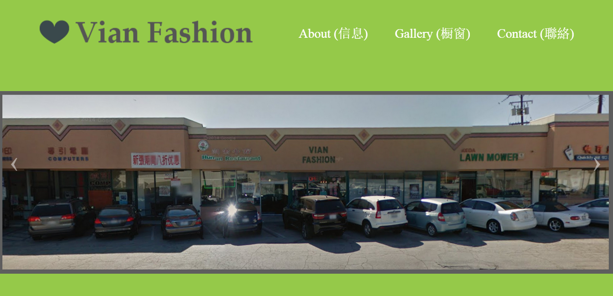
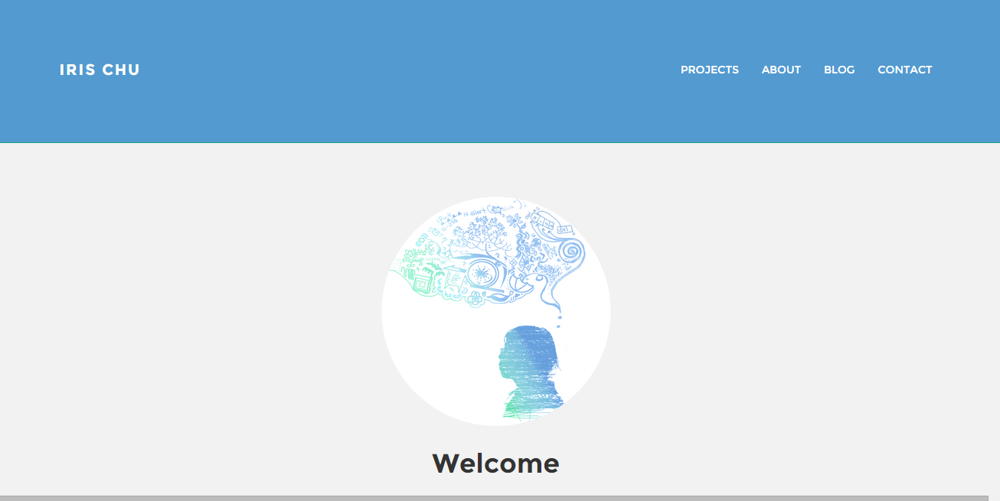
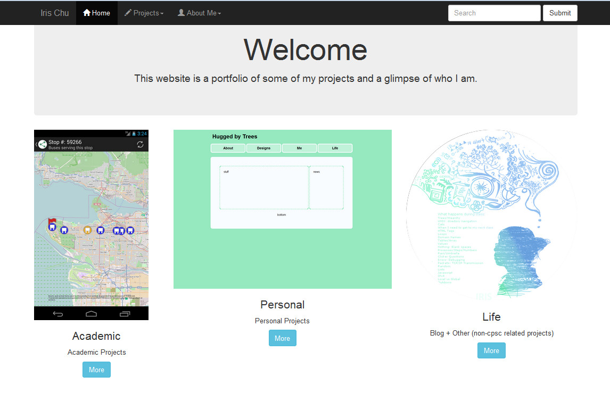
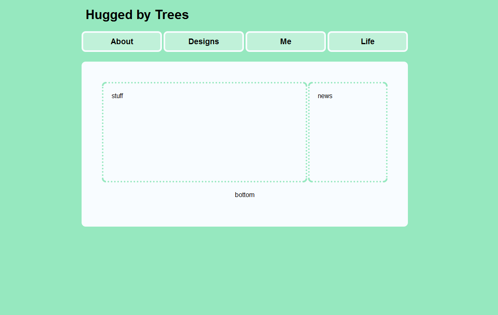
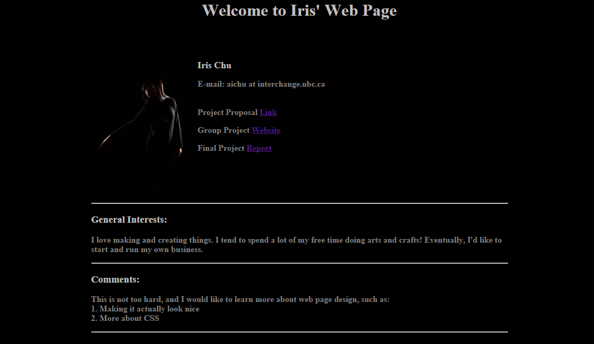

Website #5: Summer 2015
I recently designed this website for a small company in LA

Website #4: The website you are browsing is Website #4 :)
This website is based on a Twitter Bootstrap template. I am using Google Drive to host this website.

Website #3: Winter 2013
Trying to get all the visible items look even in all screen types (e.g. desktop vs mobile) was too much work for me, so I learned how to use Twitter Bootstrap for the grids system and etc.

Website #2: Summer 2013
As my interest kept growing after classes ended, I enrolled into Code Academy and learned more about CSS to build prettier websites.

Website #1: Spring 2013
I learned JavaScript through online resources and incorporated what I learned into my group project. Here are the two pages I worked on:
Website #0: Spring 2013
I made my first ever website using only HTML for CPSC101 class.
